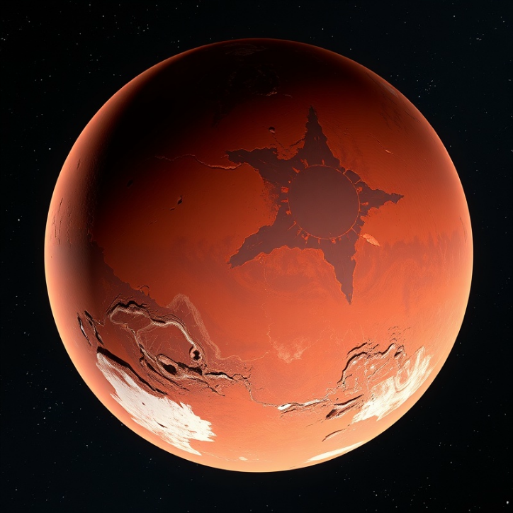

ABOUT MARS
The fourth planet from the Sun and Earth's closest neighbor, Mars has captivated human imagination for centuries.

The Red Planet
Mars is often called the "Red Planet" due to the iron oxide prevalent on its surface, giving it a reddish appearance. Mars is a terrestrial planet with a thin atmosphere, with surface features reminiscent of both the impact craters of the Moon and the valleys, deserts and polar ice caps of Earth.
Mars has two moons, Phobos and Deimos, which are small and irregularly shaped. These may be captured asteroids similar to 5261 Eureka, a Mars trojan.
Distance from Sun
227.9M km
Martian Day
24.6 Hours
Martian Year
687 Days
Gravity
3.72 m/s²
Temperature
Average -60°C (-80°F), with extremes from -125°C (-195°F) to 20°C (70°F) at the equator during summer.
Atmosphere
Thin atmosphere composed of 95% carbon dioxide, 3% nitrogen, 1.6% argon, and traces of oxygen and water.
Geography
Home to Olympus Mons, the largest volcano in the solar system, and Valles Marineris, a vast canyon system.
Water
Evidence suggests Mars once had significant liquid water on its surface, with potential subsurface water ice today.